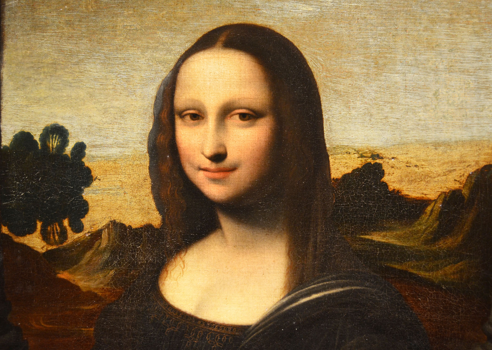

Arte Renascentista
Mona Lisa (c. 1503-1506) - Leonardo da Vinci

A Última Ceia (c. 1495-1498) - Leonardo da Vinci
Escola de Atenas (c. 1509-1511) - Rafael
A Criação de Adão (c. 1512) - Michelangelo
David (1501-1504) - Michelangelo